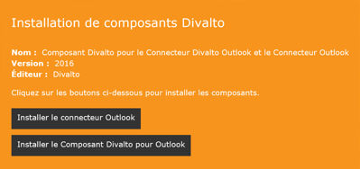
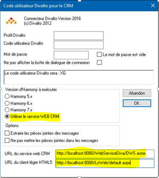

Une version du connecteur pour Outlook, gérant l’interface avec l’ERP sans qu’Harmony soit installé sur le poste client, permet son utilisation avec un client léger Html5. Ce connecteur dialogue avec le serveur par un service Web.
Les trois fonctionnalités offertes par le connecteur Outlook classique sont disponibles :
• L’affichage de la fiche tiers
• La génération d’un événement
• L’accès aux contacts.
Sur le poste client, il faut installer les éléments suivants :
Le connecteur Outlook, qui ajoute l’onglet Divalto dans le client de messagerie.
Le composant Divalto pour Outlook, qui permet à Outlook de dialoguer avec le serveur Divalto par un Web Service.

Sur le serveur IIS
Il est nécessaire de mettre en œuvre :
Le "Serveur pour le client léger Web".
En effet, les traitements de l’interface avec l’ERP lancés depuis Outlook s’exécutent dans un navigateur client du serveur Divalto.
Le "Service Web pour programmes Diva" car le client Outlook dialogue avec le serveur grâce aux services Web.
Cette installation s’effectue par le choix "Installation Serveur Client léger Web" du menu "Paramétrage" d’Harmony puis par l’onglet "Autre Services Web".
Outlook du poste client
Dans Outlook du poste client, il est nécessaire d’effectuer les paramétrages particuliers suivants :

Attention : les URL du service Web et du client léger Html5 doivent rigoureusement correspondre au paramétrage effectué sur le serveur.
Cas où le serveur de webservices est différent du serveur HTML5
Dans ce cas, il faut, dans le répertoire du service web, créer un fichier DivaltoEnv.txt (il existe peut-être déjà).
Il faut y rajouter deux balises :
<Outlook_WebServer_Path> : Chemin au format Windows d'un dossier où seront stockés temporairement les éléments envoyés par le client
<Outlook_Harmony_Path> : Chemin au format Harmony de ce même dossier
En effet, le client envoie des informations via un webservice et le client HTML5 doit pouvoir y accéder. Si des deux serveurs sont distincts, il faut renseigner ces deux paramètres pour indiquer à chacun où trouver les informations envoyés par le client.